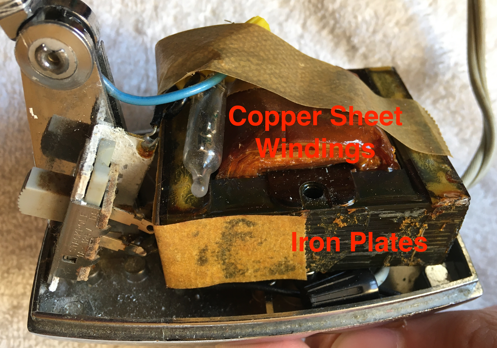

Introduction
The Model 8100 Tensor Desk Lamp was another device given to me by my grandma to be repaired. My grandma had used the small desk lamp for her studies in highschool during the early 1950s. Over time, the joints in the lamp arm had loosened. As a result, the lamp could only be positioned closely to its base where the moment arm of the lamp was smallest. When the lamp was repositioned to stretch out from its base, the lamp failed to sustain its position and would fall over. My grandma asked me if there was any way I could fix it.
Unfortunately, this story is one of failure. Not only did I fail to fix it, but I also rendered the device inoperable by accidentally splitting the wire supplying power to the lamp. Nonetheless, the old lamp made for an interesting teardown and I was forgiven by my grandma.

Original Lamp

Exploded Wire
Failed Repair
Maybe add something here about the repairing old electronics book

Electronics Book
Lamp Base
The base of the lamp consisted of a step down transformer, switch, and a small glass encapsulation of wire which I think was a switch. Of these components, my interest was drawn most to the transformer. Compared to the clean stainless steel exterior of the modern step down transformer in the subwoofer speaker I tore down, this transformer presented altogether differently. Not only did the components appear to be degrading with age, the scattered pieces of tape and heavy application of lacquer over the iron plates seemed seriously jank. Seeing all the transformer components exposed like this, I was interested to learn more about how transformers function. A few Youtube videos later (I found this video particularly helpful), I learned some basics of transformer design.

Exploded Base
Fundamentally, transformers are circuit components used to raise or lower AC voltage in a circuit using a pair of inductors (coils of wire). Alternating current moving through one inductor generates an alternating magnetic field and thus an induced electromotive force (EMF) on the other inductor, driving a flow of alternating current. If the first inductor has fewer coils than the second inductor, more current moves through the second inductor and thus it also has a lower voltage. Since the output voltage by this kind of transformer would be lower than the input voltage, it is said to be a step down transformer. If instead the output voltage was greater than the input voltage, it would be called a step up transformer.
To strengthen and guide the magnetic field from the first inductor through the second inductor, an iron core is used. This iron core along with the copper wire windings of the inductors contributes to transformers often appearing as hefty blocks. Due to inefficiences in the transfer process such as eddy currents that are generated in the iron core by the inductors' magnetic field, transformers can dissipate a significant amount of electrical energy as heat. To reduce the eddy currents in the iron core and thus reduce the likelihood of the transformer overheating, the iron core is formed using many thin plates held together by lacquer.
Transformer

Switch
Miscellaneous Notes

Base Label

Twist-On Wire Connectors